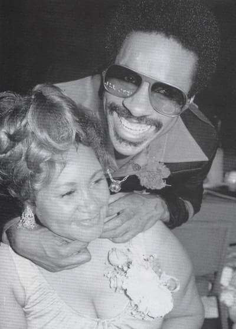
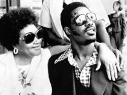
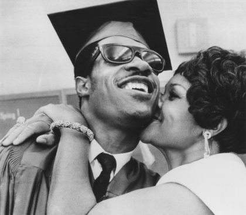

Mama Lula,
the light of Stevie Wonder

The unexpected death of Lula Mae Hardaway on May 31, 2006 left a wound in the heart of Stevie Wonder impossible to heal. It's hard to forget a mother, and if as in the case of Lula, it gave everything for their children. He was born on January 11, 1930 on a sharecropper farm in Alabama, and had a difficult youth, which survived poorly with episodes of abuse, forced prostitution and the need to steal to be able to feed their children. The bad fortune was primed in she once more time with the "visual disability" of his third son Stevland Judkins (Stevie Wonder), whose problem was blamed, although the excess oxygen in the incubator where they had to treat him to be born prematurely was the cause.
But the record and support your child so that his life was so natural and like any ordinary kid, got the little creature and lit, touched by a gift "divine", they transformed from "ugly duckling into a swan," and Today the music world can count on a good number of fantastic songs exits a privileged mind.
Some of these songs are in one way or another because of this woman, always willing to help in your child, co-wrote with Stevie songs as "I Was Made To Love Her", "You Met Your Match" , "I Don't Know Why I Love You" or the famous "Signed, Sealed, Delivered I'm yours".

She relates in her biography, with his son Stevie at the piano, a piece of melody, a piece of letter, over and over again: "
Here I am baby.... Here I am baby." and that she was "Signed, sealed, and delivered. I'm yours".
It is a flagship song for Stevie, in one phrase summarize the existence of a whole life, a mother willing to give his life for him. Has been the inspiration and the fuse that has led to the recent world tour of Stevie Wonder, fulfilling the wish of his mother to Stevie was back in touch with their fans live and could express that unconditional surrender of all those who enjoy with the music of this man.

Stevie Wonder has always thanked his mother for her support, both in the immaterial and spiritual form of love, as in the material concerned for her mother, after a hard life of youth, would not have to worry about than their hobbies; fishing, cooking, horse racing, the church..., Stevie once said: "
We pray for our mother is the best, we want it to be a queen... I feel a million times so blessed that I have received in my life".
But the May 31, 2006, sadly returned back to this woman with bright eyes.
His light left shining, leaving the heart of Stevie in darkness. The tour that resulted in the live DVD
Live At Last, this was a tribute from Stevie Wonder for dedicate to his mother, as the publication of a future album entitled "Gospel Inspired By Lula" which will reflect the affection and love for a child to appreciate his mother.

Stevie Wonder and his mom
Signed, Sealed Delivered, I'm Yours
Like a fool I went and stayed too long
Now I'm wondering if your love's still strong
Oo baby, here I am, signed, sealed delivered, I'm yours
Then that time I went and said goodbye
Now I'm back and not ashamed to cry
Oo baby, here I am, signed, sealed delivered, I'm yours
Here I am baby
Oh, you've got the future in your hand
(signed, sealed delivered, I'm yours)
Here I am baby,
oh, you've got the future in your hand
(signed, sealed, delivered, I'm yours)
I've done alot of foolish things
that I really didn't mean
Hey, hey, yea, yea, didn't I, oh baby
Seen alot of things in this old world
When I touched them they did nothing, girl
Oo baby, here I am, signed, sealed delivered, I'm yours, oh I'm yours
Oo-wee babe you set my soul on fire
That's why I know you are my only desire
Oo baby, here I am, signed, sealed delivered, I'm yours
Here I am baby
Oh, you've got the future in your hand
(signed, sealed delivered, I'm yours)
Here I am baby,
oh, you've got the future in your hand
(signed, sealed, delivered, I'm yours)
I've done alot of foolish things
that I really didn't mean
I could be a broken man but here I am
With your future, got your future babe (here I am baby)
Here I am baby (signed, sealed delivered, I'm yours)
Here I am baby, (here I am baby)
Here I am baby (signed, sealed delivered, I'm yours)
Here I am baby, (here I am baby)
Here I am baby (signed, sealed delivered, I'm yours)